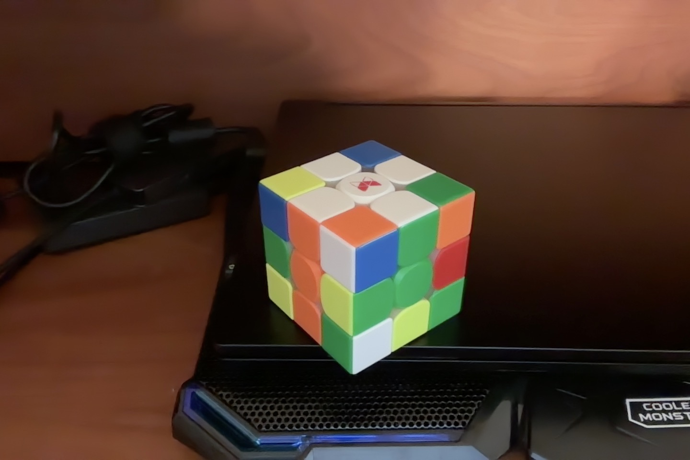

Goal
In this step of the cube, the ultimate goal is to form a white cross on top of the cube along with 2x1 blocks of matching color on each 4 adjacent sides, precisely like in this image:
Before we start solving the white cross, let us first define the three fundamental elements of cube. Namely, the center piece, edge piece, and corner piece. Also, we must define one fundamental move of the cube: the twist.
Fundamental elements
The “Twist” move
Step 1. Form the cross shape
Step 2. Form the blocks on adjacent four sides